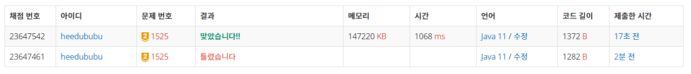

👀 문제
https://www.acmicpc.net/problem/1525
👊 도전
1. 설계
- map 숫자를 String 한 줄로 표현한다.
- String이 “123456780”이 아니라면 큐에 넣고 BFS 시작한다.
- String에서 0의 위치를 찾는다.
- 거기서 사방으로 갈 수 있는 위치를 찾고 범위를 체크한다.
- swap(0, 새로운 인덱스)
- 변경값이 “123456780”이면 맵에서 현재 String의 value+1을 리턴한다.
- 맵에 없으면 맵, 큐에 push한다.
2. 구현 (성공 코드)
1
2
3
4
5
6
7
8
9
10
11
12
13
14
15
16
17
18
19
20
21
22
23
24
25
26
27
28
29
30
31
32
33
34
35
36
37
38
39
40
41
42
43
44
45
46
47
48
49
50
51
52
53
54
55
56
57
58
59
60
61
62
63
64
65
import java.util.*;
import java.io.*;
/**
* @author HEESOO
*
*/
class Main {
public static void main(String[] args) throws IOException {
BufferedReader br=new BufferedReader(new InputStreamReader(System.in));
StringBuilder sb=new StringBuilder();
Queue<String> q=new LinkedList<>(); // BFS 돌리기 위함
HashMap<String, Integer> map=new HashMap<>(); // 중복 체크
for(int i=0;i<3;i++) {
sb.append(br.readLine().replace(" ", ""));
}
if(sb.toString().equals("123456780")) // 이미 완성된 퍼즐
System.out.println("0");
else {
map.put(sb.toString(), 0);
q.offer(sb.toString());
System.out.println(bfs(q, map));
}
}
public static int bfs(Queue<String> q, HashMap<String, Integer> map) {
int[] dotX= {0,1,0,-1};
int[] dotY= {1,0,-1,0};
while(!q.isEmpty()) {
String str=q.poll();
int zeroIdx=str.indexOf("0"); // 0 위치 찾기
int row=zeroIdx/3; // map에서 행 위치
int col=zeroIdx%3; // 열 위치
for(int i=0;i<4;i++) { // 이동 가능한 범위 체크
int xx=row+dotX[i];
int yy=col+dotY[i];
if(xx<0 || xx>=3 || yy<0 || yy>=3) continue;
int swapIdx=3*xx+yy; // 2차원 인덱스를 1차원으로 변환
// 0과 바꿀 자리를 swap
StringBuilder sb=new StringBuilder(str);
char ch=sb.charAt(swapIdx);
sb.setCharAt(swapIdx, '0');
sb.setCharAt(zeroIdx, ch);
// 정답 찾음
if(sb.toString().equals("123456780"))
return map.get(str)+1;
// 새로 만들어진 문자열인 경우
if(!map.containsKey(sb.toString())) {
q.offer(sb.toString()); // 큐에 넣어 나중에 다시 체크
map.put(sb.toString(), map.get(str)+1);
}
}
}
return -1;
}
}
3. 결과
 🤟 성공 🤟
4. 설명
- 2차원 map을 1차원 String으로 변환하여 사용한다
- 시간과 메모리의 제한이 있기 때문에, map의 숫자들을 한 줄로 표현하고, 인덱스별로 map에서 행, 열 위치를 찾아 swap하는 방식으로 구현한다.
- 따라서 BufferedReader로 행을 받은 후, 공백을 제거하여 StringBuilder에 저장하였다.
- 저장한 sb가 “123456780”이라면 bfs를 돌릴 필요가 없으므로 바로 0을 리턴하고 종료한다. BFS를 돌게 되면 리턴 값이 2가 되므로 조심해야한다.
- 아닐 경우, 큐와 맵에 sb를 넣는다.
- 맵의 K는 현재 숫자 문자열, V는 K가 되기까지 카운트한 횟수이다. 따라서 처음에는 0을 넣어야 한다.
- BFS로 숫자를 바꾸며 조건에 맞는지 체크한다
- 큐에서 뽑은 값을 str에 저장한다.
- str에서 0의 위치를 찾아 zeroIdx에 저장한다.
- map에서 0의 위치 주변으로 바꿀 값을 찾아야 하기 때문에 map에서 0의 위치(i, j)를 찾아야 한다.
- 행은 zeroIdx를 3으로 나눈 몫, 열은 나머지가 된다.
- 찾은 row, col 주변으로 갈 수 있는 곳을 for문을 통해 찾는다.
- 인덱스 범위를 체크한다.
- 2차원 인덱스를 다시 1차원으로 변환하여 swapIdx에 넣는다.
- 이제 0(zeroIdx)과 바꿀 값(swapIdx)를 바꿔준다.
- String에서도 바꿀 수 있지만 StringBuilder가 문자열 삽입 등에 더 최적화되어있으므로 str을 StringBuilder로 바꿔서 swap을 진행한다.
- 바꿀 인덱스의 값을 ch에 저장하고, setCharAt()을 이용하여 문자열을 바꾼다.
- 바꾼 문자열 sb.toString()이 “123456780”이라면 정답을 찾은 것이다. 현재 문자열 str의 카운트 횟수를 map에서 찾아 +1한 값을 리턴한다.
- 아닐 경우 바꾼 문자열이 이전에 만든 적이 있는 것은 아닌지 체크해야한다. 큐에는 새로 만든 문자열만 들어가야 하므로(그래야 같은 경우를 또 탐색하는 것을 방지할 수 있다) 맵에서 새로 만든 문자열이 존재하는지 체크하고, 없을 경우에 큐와 맵에 삽입한다.